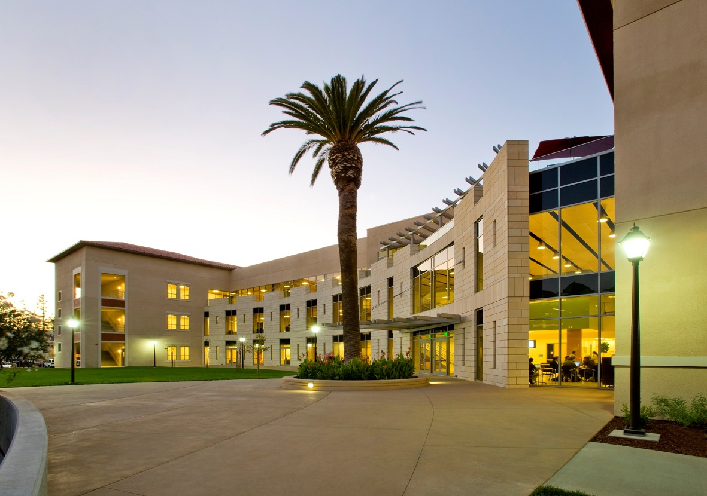

Master of Science in Information Systems
Santa Clara University (Jan 2015 - June 2016)
Learn more about MSIS at SCU ⟶
Work Experience
- Teaching Assistant for Math (Mathematics and Computer Science Department)
- I check 10-15 papers per hour.
- Write solutions for incorrect answers. Thus increasing their scores by 40% in future assignments.
- Help students with their doubts.
- Database Assistant
- I work as assistant in Stockroom.
- Manage more than 5500 materials and tend to customers.
- Write queries in AIM application to update university's stockroom database.
- Graphic Designer
- My work here consists of assisting Prof. Dr. Tim Urdan by designing graphs for his upcoming textbook in statistics.
- System Administrator
- Manage 7 engineering labs
- Run simple Linux commands to run scripts to help students to reset their password, or give them access to Lab door, etc
- Designing Dashboards & Scorecards with Tableau | | ERP
- System Analysis & Design | | Database Management Systems
- Data Warehousing | | Big Data
- Operations Management | | Software Project Management
- Web Programming | | Object Oriented Programming (2nd Rank in SCU)
- Virtualization & Cloud Computing | | Business Networks
- Companies Policies and Strategies
Coursera (Aug 2013 - Present)
I discovered Coursera and the idea of providing free online education to whoever who wanted to learn just mesmerised me. I have been exploring Coursera and other websites providing online education since then. Some of the courses that i've done on coursera and other websites are:
- Coursera
- Crafting Quality Code in Python (100.2%)
- Server Side Development with Node.js
- Multiplatform Mobile App Development with Web
- Front End JavaScript Framework with AngularJS
- Responsive Web Applications
- Web Application Development with JavaScript and MongoDB
- Meteor.js Development
- Responsive Web Design || Responsive Website Basics
- Advanced STyling with Responsive Design
- Android Development || Python || Java
- Udacity
- Android Development | | HTML & CSS
- Linux Command Line | | Java Programming
- And many more
It has been a great learning experience and I intend on continuing as long as there are more materials coming up.
Electronics Engineering
University of Mumbai (Aug 2008 - May 2012)
Hosted technical festival as an event head and managed a team of 10 students to design and create tracks for robotics competition. Relevant Coursework
- Java
- Computer Networks
- VLSI
- Micro Controllers
- Advanced Mathematics
- Image Procesiing